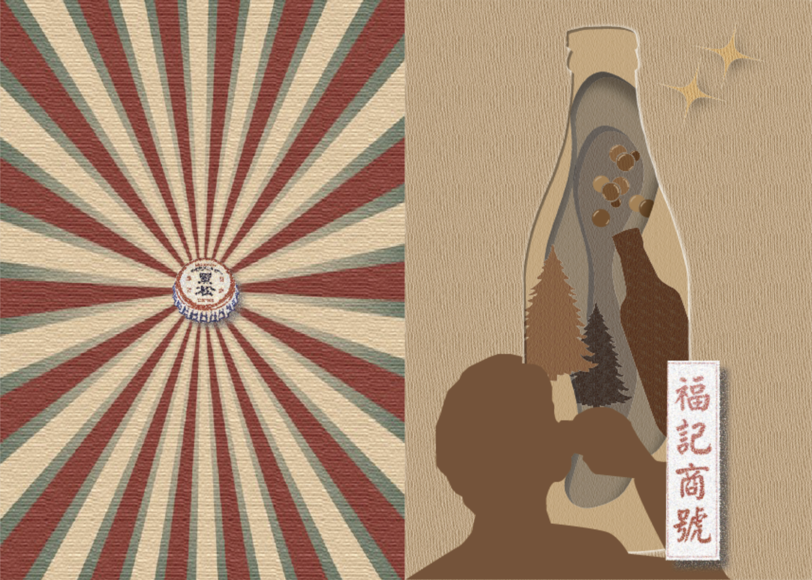

參觀「黑松世界」後，對於裡面復古裝潢留下深刻印象，因此想透過紙雕特性，模擬沙士液體與泡沫的流動，並使用點狀化效果，呈現舊式玻璃瓶、瓶蓋、招牌，以襯托老品牌的文化價值。
After visiting the "The world of Hey Song", I was deeply impressed by the retro interior decoration, so I wanted to simulate the flow of soda and foam through the characteristics of paper sculpture, and use the dotted effect to present old glass bottles, bottle caps, and signboards. To set off the cultural value of the old brand.
封面/封底

內頁